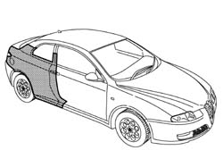
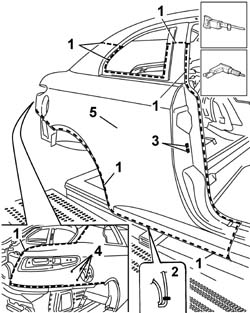
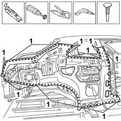
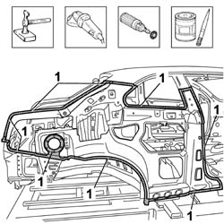
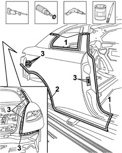
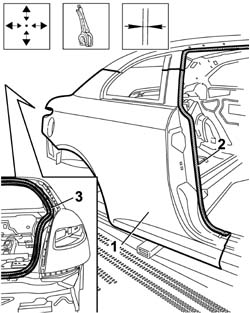
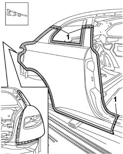
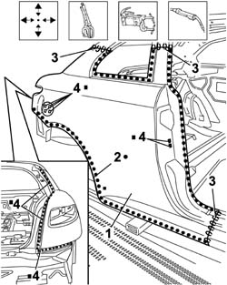
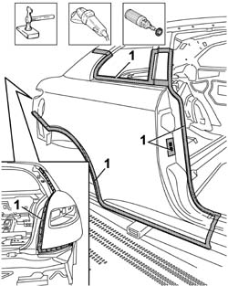
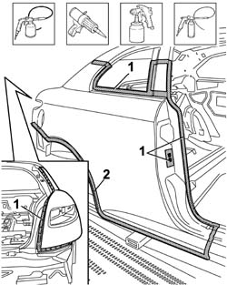

7210E52 REAR WING (1), LH OR RH
- Path
- Procedures > 72 PANELS AND FRAME > 7210 REMOVING REFITTING > 7210E EXTERNAL PARTS > 7210E52 REAR WING (1), LH OR RH
- Kind
- repair procedure (removal / refitting; the operation number is the code)
- Applies to
- all engines; all production periods
- Interactive page
- https://sloeber94.github.io/elrnDB-aGt/en/#/125002038
Applies to: all engines; all production periods
 Removing
Removing
 Refitting
RefittingCheck that the components connected are not distorted by checking the bodyshell alignment measurements using suitable equipment (gauges, templates or jigs).
Straighten the body as necessary.

Applies to: all engines; all production periods
1. Use a hack sawing machine following the cutting lines shown in the diagram.
2. Sections representing the cutting point in order to allow the operator to adjust the position and the depth of the cut in order not to damage the panels underneath.
3. Use the drill and chamfer the spot welds shown in the diagram.
4. (For the right wing only) Use the drill and chamfer the spot welds shown in the diagram.
5. Remove the wing.

Applies to: all engines; all production periods
Use the vibrating knife with the special blade to remove the P.V.C. from the rear wing offcut on the vehicle.
Use the rotary brush to remove the paint to access the spot welds.
1. Use the chamfering machine to remove the spot welds shown in the diagram.
Use the drill and chamfer the spot welds not accessible with the chamfering machine.
Use the hammer and chisel and remove the spot welds chamfered previously.
Remove the rear wing offcut from the vehicle.

Applies to: all engines; all production periods
Straighten the edges of the vehicle using a hammer and dolly block.
Remove the spot weld residues using a disc grinder.
Use a rotary brush to clean the areas treated previously.
1. Apply electro-galvanizing paint.

Applies to: all engines; all production periods
1. Work at the bench and cut the replacement wing making sure that a section of the panel remains for overlapping.
2. Remove the anti-corrosion treatment from the entire perimeter of the inside and outside of the replacement part using a rotary brush.
3. Make the holes shown using the drill.
Apply electro-weldable paint to the edges involved.

Applies to: all engines; all production periods
Refitting
Removing1. Position the wing correctly on the vehicle and secure it using self-locking clamps.
2. Fit the door housing seal, striker and front door.
3. Fit the tailgate housing seal and the tailgate.
Check the alignment and the surrounding gaps.

Applies to: all engines; all production periods
1. Use the circular saw to cut the edges of the panel so that the join line is perfect.
Remove the replacement part, the excess panels and the components used for the adjustment.

Applies to: all engines; all production periods
1. Position the wing correctly on the vehicle and secure it using self-locking clamps.
2. Use a spot welder in the areas shown in the diagram.
3. Use a MIG welder to seam weld in the join areas.
4. Use a MIG welder and weld the openings made previously in the replacement part.

Applies to: all engines; all production periods
Correct any distortions to the panel using a hammer and dolly block.
Attach the reference tabs.
1. Use a disc grinder to level the welds.
Use a rotary brush to clean the areas welded previously.

Applies to: all engines; all production periods
1. Apply anti-oxidant protection to the areas involved in the welding.
Seal the join lines between the replacement part and the vehicle.
Proceed with the painting stage.
2. Apply the wax based oil protection to the inside of the rear wing.
